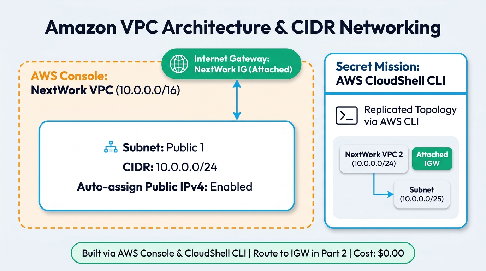

AWS VPC Networking • Flagship #1 Track
Amazon VPC Networking Series
9-part hands-on AWS VPC series covering CIDR design, Internet Gateways, Route Tables, stateful Security Groups vs stateless NACLs, and EC2 Global View via Console & CloudShell CLI.
AWS VPC
Route Tables
SG & NACL
AWS CLI